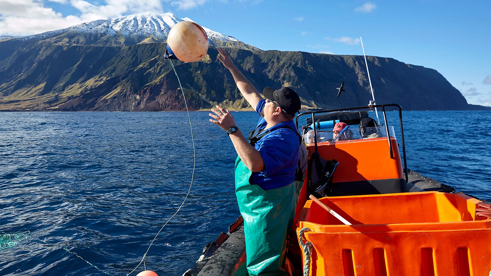
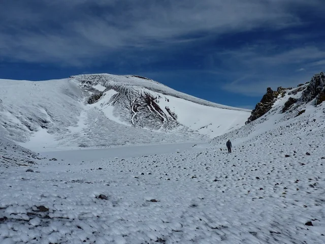
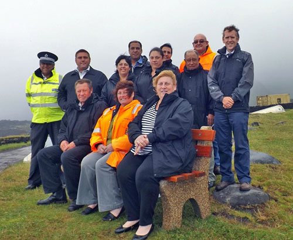

The Journey Begins Where Roads End

Enjoy the Ocean
For those on Tristan da Cunha, the ocean isn't merely nearby - it sustains them, offering work while also intertwining into how they live, what they believe, everything.
Each year when lobsters migrate, little vessels leave the wharf, crewed by people those are keeping alive a long tradition of careful rock lobster harvesting.
The island's rocky coastline offers sight of seabirds riding the breeze alongside sunbathing seals. Waves crash nearby, a constant rhythm beneath the wide Atlantic sky.
Hike to the Base of Queen Mary's Peak
Tristan da Cunha feels the weight of Queen Mary's Peak, a quiet volcano looming over everything like a natural crown.
Those who seek adventure might wander twisting paths on gentler hillsides. A chill descends while sightlines extending forever to the ocean.
Climbing transforms into its own tale - a finding of wonders that gifts hikers breathtaking views alongside a sense of the island's wild strength.


Visit the Local Museum
Step inside the Tristan da Cunha Museum - it's where the island's story unfolds, a real look at its past alongside those who lived it.
The place holds photos, relics and stories of courage - showing how people here survived volcano blasts, rough ocean conditions, then years cut off from the world.
Each thing here seems to hold a story of tenacity - evidence to the fact that inventive spark is still alive on this faraway island.
Meet the Friendly Locals
Folks in Edinburgh of the Seven Seas greet newcomers like old pals - they're friendly, generous and are known for their humor. It feels less like visiting, more like coming home.
Life unfolds gently; folks exchange talk of weather, tales of the catch, or welcome someone to come along.
Life here unfolds slowly; folks greet each other by name, so expect to find yourself fitting right in - a comfort rarely discovered elsewhere.
